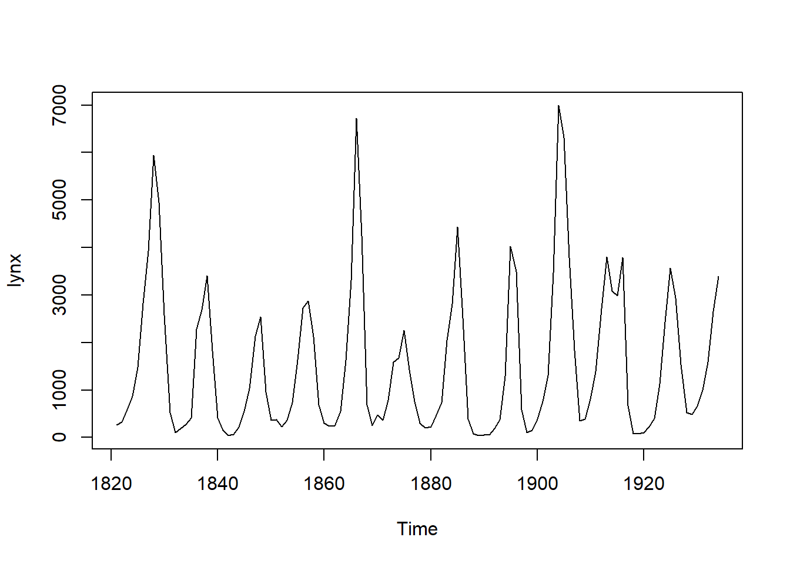
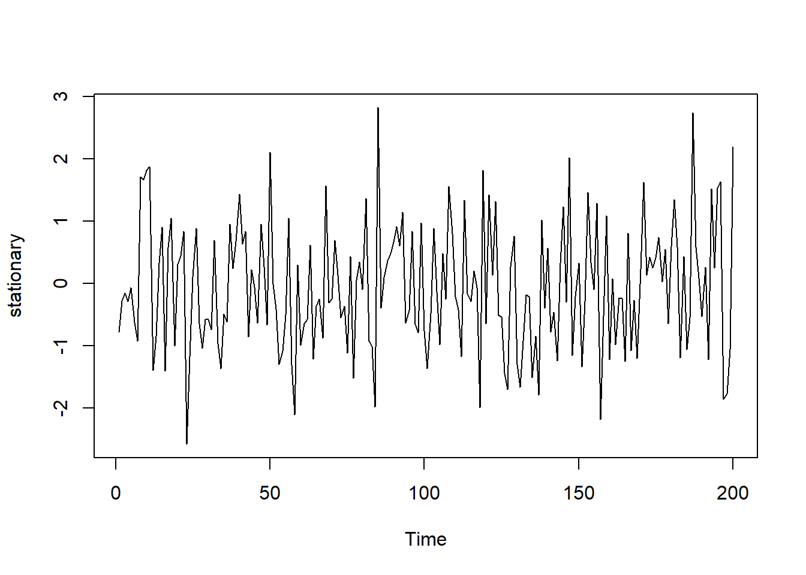
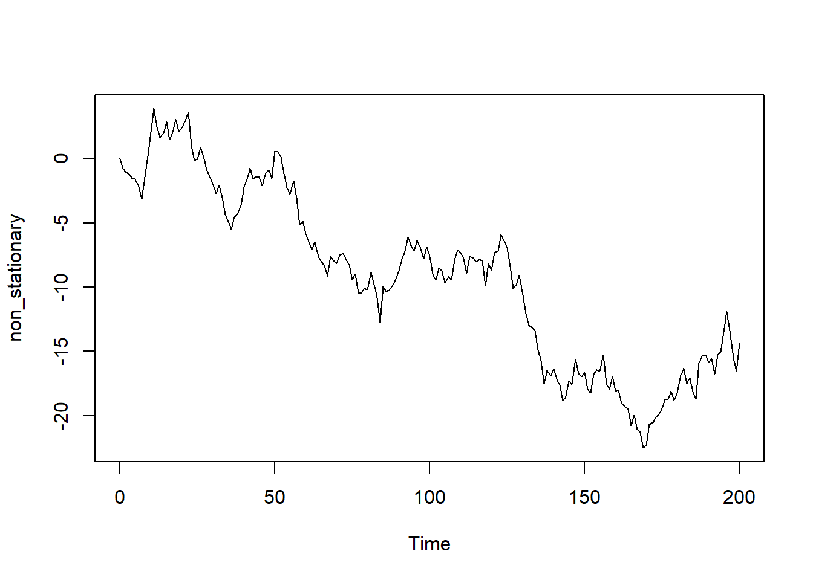

1.1 정상성(Stationary), 비정상성(Non-Stationary)
정상성 시계열은 한마디로 말하자면 어떤 시계열적 특성이 없는 데이터를 말한다. 데이터가 관측되는 시간에 의존하지 않는 상태이다1. 반대로 비정성성 시계열이라고 하는 것은 추세, 계절성 등 시계열적 특성을 보유하고 있는 데이터를 말한다.
뒤에서 설명할 백색 잡음(white noise)은 정상성 시계열 데이터이다. 백색잡음은 시간에 의해 데이터의 특별한 패턴을 보이지 않기 때문이다. 그러나 모든 정상성 시계열은 백색잡음이 아니다. 정상성 시계열도 추세나 계절성이 아닌 주기적 반복이 있는 경우도 있기 때문이다. 하지만 주기적 반복이 존재한다 하더라도 그 주기가 일정하지 않으면 정상성 시계열로 볼 수 있다.2

위의 plot은 주기적으로 데이터가 올라갔다 떨어졌다를 반복하기 때문에 비정상성 시계열로 볼 수 있지만 반복적 데이터 패턴의 주기가 일정하지 않다는 점에서 정상성 시계열로 볼 수 있다.
시계열 예측은 정상성 시계열에서만 가능하기 때문에 비정상성 시계열 데이터에 적절한 조작을 가해서 정상성 데이터로 만드는 과정을 모델링하는 과정을 말한다.
정상성 시계열 데이터는 다음과 같은 특성을 가진다.
- 일정한 평균(등평균성)과 일정한 분산(등분산성)3
정상성 시계열 데이터는 시간의 흐름에 따른 데이터의 평균(시계열 데이터의 rolling window 평균)이 일정하다는 의미이다. 데이터의 처음부터 시차 이동평균을 구했을 때 그 평균값이 일정하게 유지되어야 한다.
- 일정한 분산(등분산성)4
정상성 시계열 데이터는 시간의 흐름에 따른 데이터의 분산(시계열 데이터의 rolliing window 분산)이 일정하다는 의미이다. 등평균성과 같이 시차 이동분산을 구했을때 그 분산 값이 일정하게 유지된다는 것이다.

